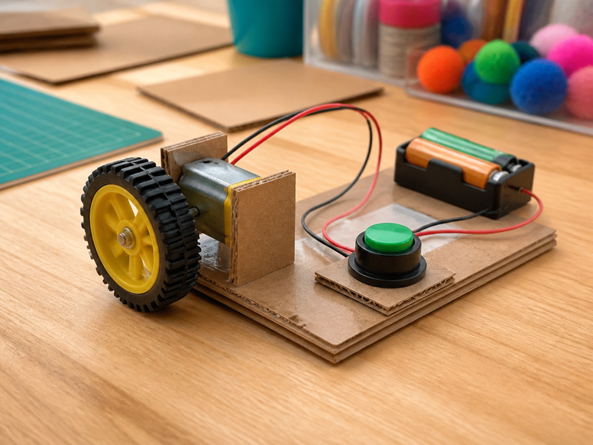
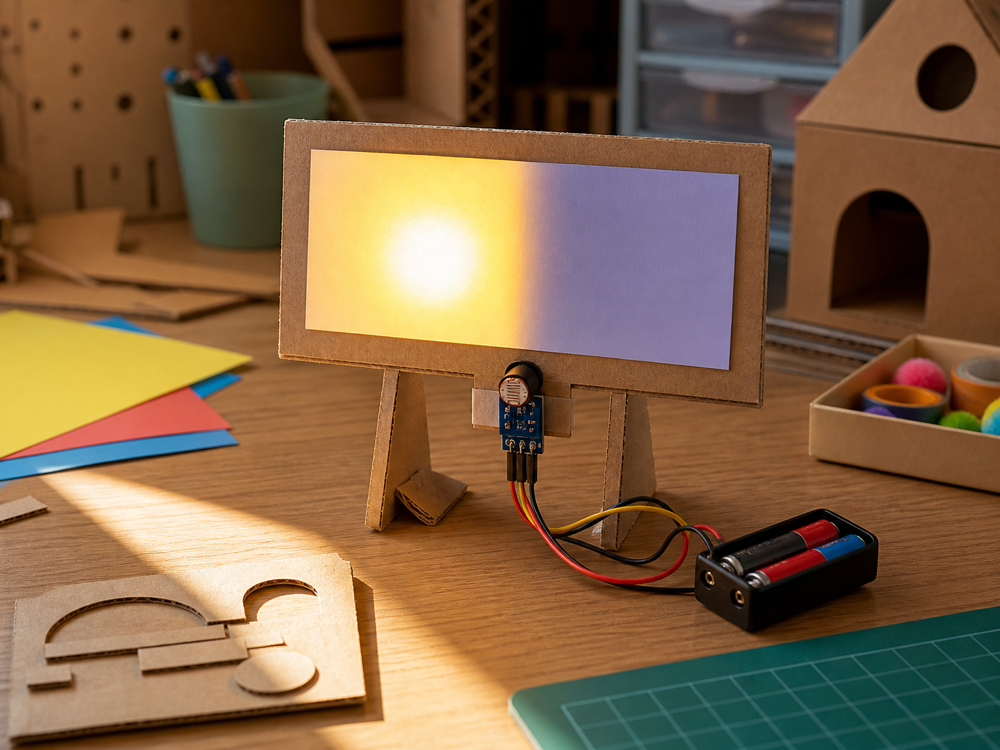
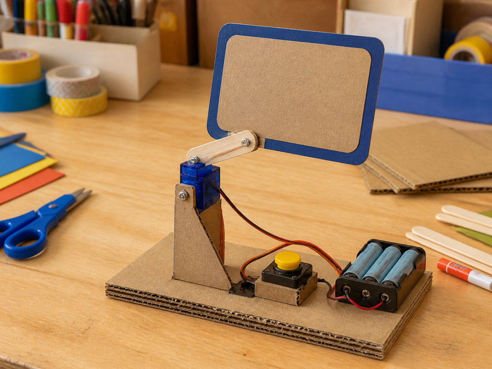

Integration CardButton-controlled wheel
Combine movement and control so the wheel spins only when the chosen button is pressed.
Hands-on creative engineering for children
Children build real ideas with motors, sensors, cardboard, wheels, switches, sketches, stories and practical problem solving.
Weekly sessions turn curiosity into things children can make, test, improve and try again.
What children might make
Children build practical powers first, then combine them into challenges like these. Each example joins two or more skills into one working build.

Integration CardCombine movement and control so the wheel spins only when the chosen button is pressed.

Integration CardCombine sensing and safe power so a sign changes when it notices light or shadow.

Integration CardCombine control and movement so a small sign swings between two positions.
How adults support the making
Children own the ideas, but adults shape the room, materials and prompts so making stays safe, practical and confidence-building.
Choose age-appropriate parts, tools and batteries before children start building.
Help children repeat, stretch or simplify based on confidence and prior experience.
Ask what changed, test one part at a time and turn stuck moments into evidence.
Value trying, testing and explaining, not only finished-looking inventions.
The same idea stretches from playful cause-and-effect making to robotics, debugging and design choices. Activities, materials, independence and depth change by age.
| Age | Group | Support level | Typical making |
|---|---|---|---|
| 4-6 | Mini Inventors | Adult-supported | Stories, big parts and cause-and-effect play |
| 6-8 | Junior Inventors | Guided making | Buttons, wheels, switches and simple structures |
| 8-10½ | Inventors | Supported choices | Motors, sensors, stronger builds and simple logic |
| 10½-14 | Advanced Inventors | More self-directed | Robotics, radio control, debugging and trade-offs |
| 14-18 | Studio Inventors | Independent studio work | Open builds, mentoring, repairability and deeper choices |
Safety and support
Sessions are set up so children can explore real materials while adults manage the room, tools, batteries and level of challenge.
Age-appropriate making Materials, tools and challenge depth change by group and confidence.
Supervised tools Facilitators set up tools, moving parts and electronics with clear boundaries.
Safe batteries Power choices are simple, supervised and matched to the activity.
Consent and safeguarding Families receive the consent, emergency and collection details they need before a child attends.
Access needs Families can share SEND, sensory needs, allergies, anxiety or access requirements so support can be planned.
The core format is a local, in-person creative engineering club, with space for special project workshops when a bigger build needs more time.
The pathway covers ages 4-18, with different materials, support and independence for each group.
Younger children use more adult-supported making. Session information makes the stay-or-drop-off arrangement clear for each group.
Getting stuck is part of the method. Facilitators help children test one thing, notice what changed and choose whether to repeat, stretch, switch or simplify.
No. Coding is introduced only when useful, alongside motors, sensors, structures, craft materials and testing. The club is not screen-first.
Activities use age-appropriate materials, supervised tools, safe battery choices and clear workshop boundaries.
It has structure, but the feel is workshop-first: make, test, improve, share.
The registration process gives families a way to flag needs before attending, so materials, room setup and support can be planned.
Use the interest section below; it asks for the details needed to match a child to the right group and support.
Share the basics that help match a child to the right age group, challenge level and support needs.